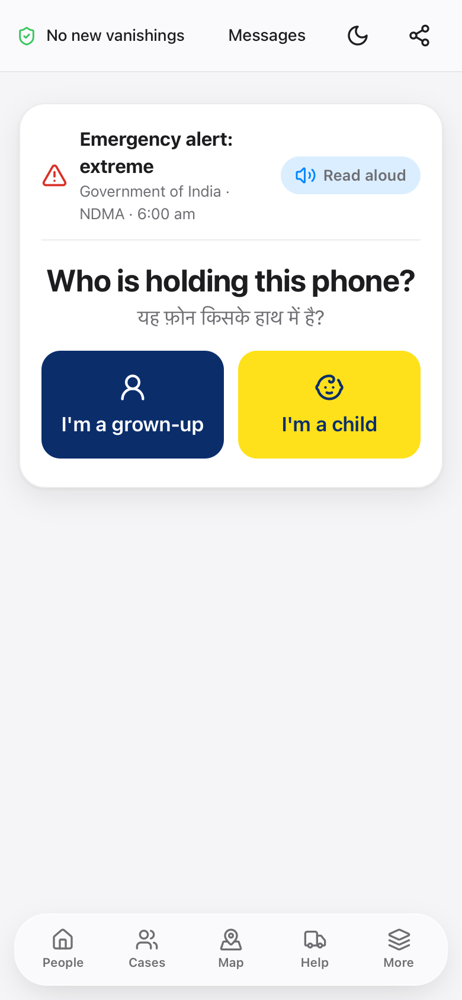
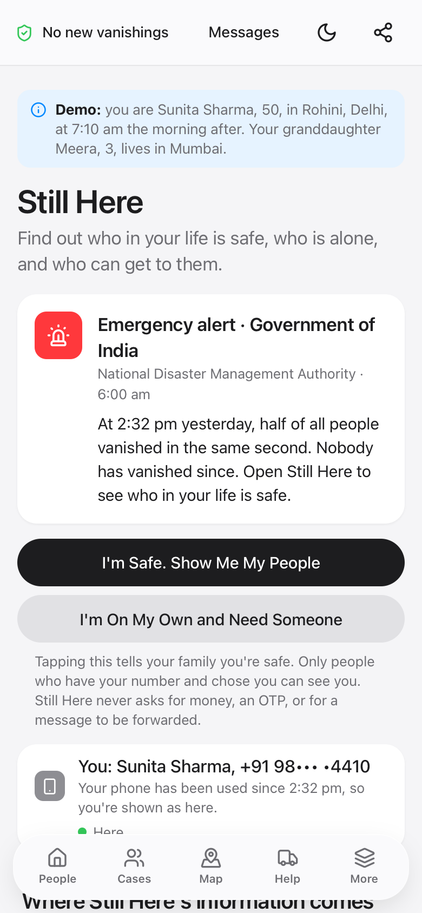
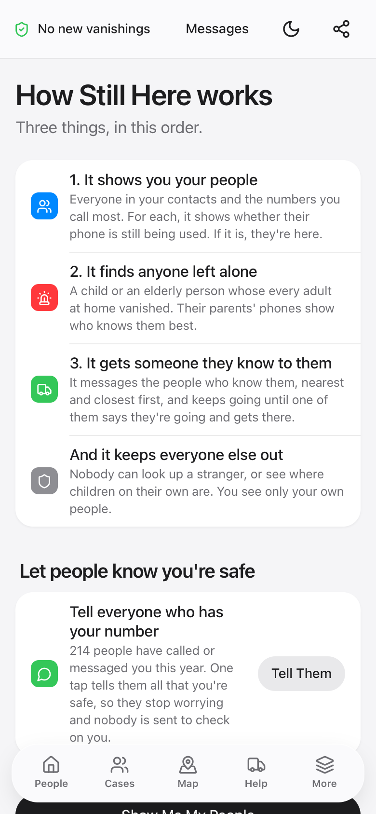
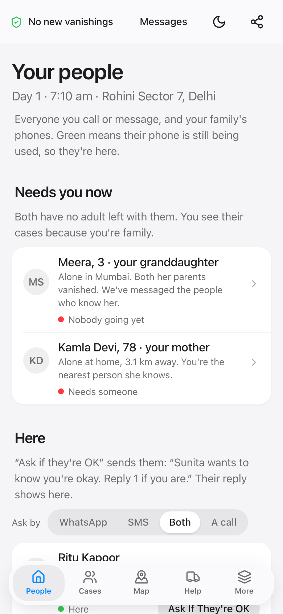

How Still Here reaches a phone
On the morning after, the government sends one alert to every phone in India. This is what happens next, screen by screen, for a grown-up and for a child.
Tap any screen to open it in the working prototype.
If a grown-up is holding the phone
Sunita, 50, in Delhi. Her granddaughter Meera, 3, is in Mumbai.
Emergency Alertnow
Government of India: at 2:32 pm yesterday, half of all people vanished. Nobody has vanished since. Tap to see who in your life is safe.
On every phone at once, even a locked one, through the same system India already uses for disaster alerts.
Open it live
The phone asks, and can read the question aloud, because a child may be the one holding it.
Open it live
One tap tells her family she is safe, and opens Still Here.
Open it live
Three things, in order: your people, anyone left alone, and someone they know going to them.
Open it live
Who in her family is here, missing or not sure, and the two who need someone now: Meera and her mother.
Open it liveIf a child is holding the phone
A child who picks up a parent's phone gets a child's version, read aloud in Hindi and English.